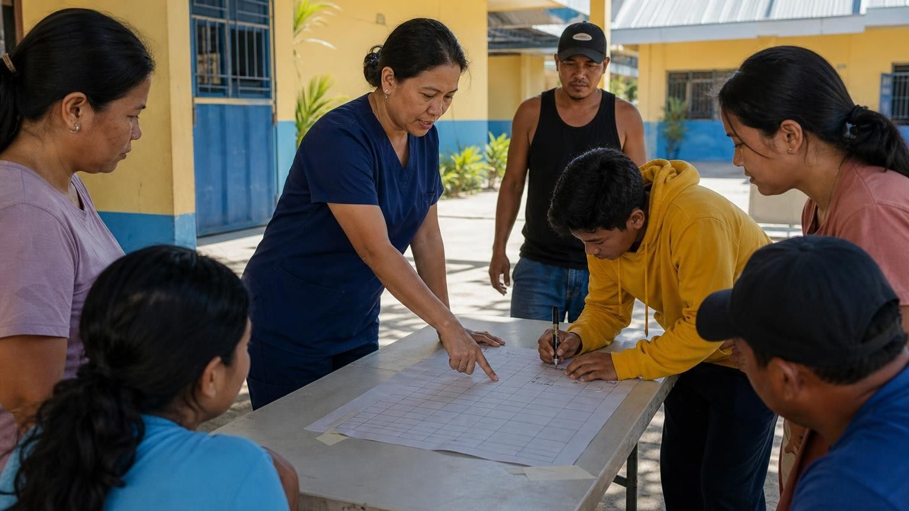
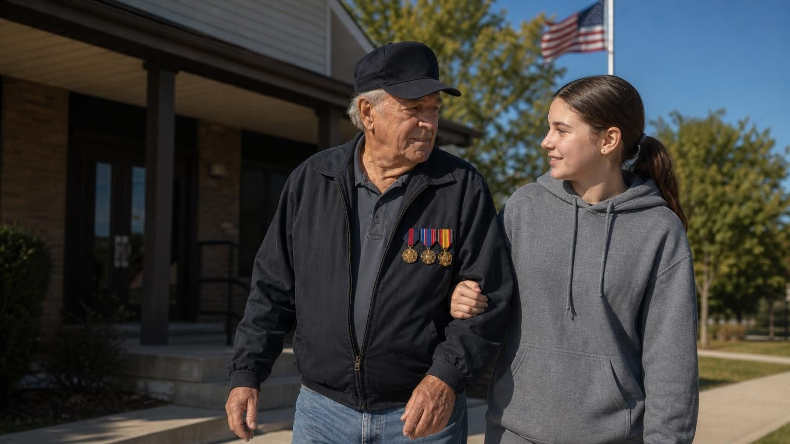
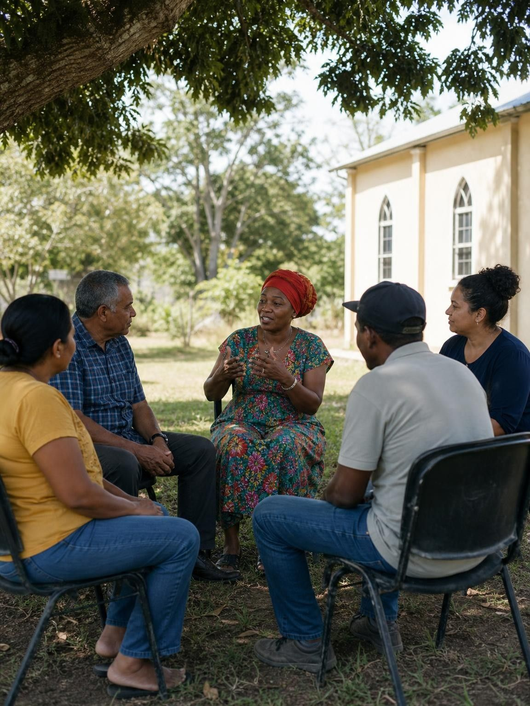
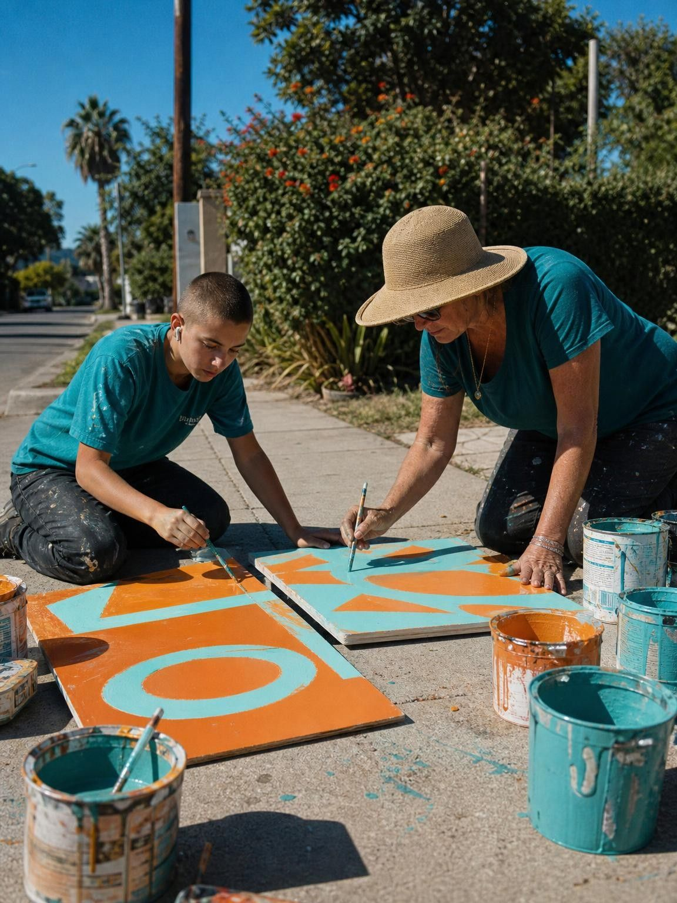

See it in 60 seconds
Four short explainers: one for organizers, one for families, one for anyone weighing trust, and one for new offices.
The sign-up sheet problem
Every cause has the same moment. The town hall ends, the room was full, forty people signed the sheet. Two weeks later, six are still answering texts.
The energy wasn't the problem. Nobody had a system to welcome those forty people, give each one a job, and keep them in the loop.
The Community Care Hub is that system.
What the hub does for your network
- Activates members. Every new person gets welcomed, matched to a role they can actually do, and followed up with.
- Coordinates the cause. One shared place for the plan, the tasks, the partners, and the verified resources people need.
- Keeps everyone moving together. Plain-language updates go out on a rhythm, so people stay connected between events.
- Shows the impact. A short monthly brief tells leaders what the community needs and what the network got done.
AI helpers do the busywork: drafting updates, tracking follow-ups, keeping lists current. People make the decisions.
Built for offices that need results now
- Day one is crowded. New offices are hiring, setting up district offices, preparing for committees, and starting outreach all at once. The hub gives you a working community network without adding staff time.
- Turnover erases knowledge. When offices change hands, casework files and contacts can disappear. The hub's knowledge belongs to the community, so it stays no matter who holds office.
- Caseloads keep growing. Many everyday needs are about finding the right resource, not a federal case. A local hub can meet those needs before they reach your caseworkers.
- People expect you to help fast. The hub gives constituents a trusted local place to turn, run by neighbors they know.
The offer
We set up one hub for a community network you choose. Free.
- You point us to one local group already working on your cause: a coalition, clinic, faith community, veterans' group, or nurse network.
- We set up the hub with them and train their coordinator.
- They run a 90-day pilot.
- After that it's theirs. They keep it, change it, or shut it down. No fees, no contract, no endorsement.
Your office only makes a referral. It doesn't buy, host, or run anything.
How it's organized: three tiers
1. Direction
A small leadership circle picks the goal, sets the ground rules, and decides what success looks like.
2. Action
Volunteers and partners run the day-to-day: outreach, referrals, events, follow-ups.
3. Voice
Updates for members, stories for the public, and briefs for decision-makers.
Starter packs for your cause

Each pack comes with a sample charter, member roles, a resource list template, and message templates.
- Maternal and family health. Connect mothers and families to trusted care, doulas, midwives, and support. Organize community health workers and educators.
- Veterans and military families. Keep a verified directory of services, including mental health and faith-based support. Coordinate warm referrals and family outreach.
- Nurse and healthcare workforce. Gather frontline voices through listening sessions. Turn concerns about staffing and safety into organized, evidence-based projects.
- Healthcare access and affordability. Help neighbors navigate coverage, find low-cost care and prescriptions, and make the value of nursing visible.
The default agent lineup
Every starter pack comes with four AI helpers ready to go. Your Soul Interview tailors them to your cause, and you can add more.
| Agent | What it does | Tier | Approval |
|---|---|---|---|
| Member Welcome & Volunteer Agent | Answers new sign-ups, matches people to roles, sends reminders, and flags volunteers who are drifting away so a person can reach out | Action | A person approves messages |
| Resource Navigator | Helps community members find programs and services from your verified resource list. Sends anyone in crisis to a person | Action | A person approves new listings |
| Event & Outreach Coordinator | Handles RSVPs, sign-ups, and reminders for meetings and events | Action | Routine reminders run on their own; announcements need approval |
| Impact Reporter | Drafts the monthly brief: what the community needs and what the network got done | Voice | A person approves every brief |
Optional fifth: Grant & Partner Writer. Drafts grant applications and partner letters when your hub is ready to seek funding. A leader approves everything it writes.
Growing your hub: agents you can add next
Once your first four are running well, you can build more. Here are ideas for helpers that look outward, toward your members, your partners, and the wider world:
- Research Scout. Tracks news, funding opportunities, policy changes, and proven practices for your cause, and sends your leadership circle a short weekly digest with sources.
- Member Relationship Agent. Keeps a simple, private record of your members and partners: who's involved, what they care about, when you last connected. Contact details are personal information, so keep this one under close approval.
- Design & Content Agent. Drafts flyers, social posts, newsletters, and slides in your hub's voice and colors. A person approves everything before it's shared.
- Partner Mapper. Maps local organizations, clinics, faith groups, and businesses working on related causes, so you can find allies and avoid duplicating effort.
- Translation & Access Agent. Prepares materials in the languages your community speaks and in plain, easy-to-read formats. A fluent person reviews before anything goes out.
- Listening Agent. Gathers feedback after events and through simple surveys, then summarizes what people are saying for your leaders.
You don't need all of these, and you're not limited to them. Describe what you need in plain language, and you can create your own. Add one at a time, give each a named approver, and check it in your monthly quality review.
Built to learn and change with you
The first setup won't be perfect. It isn't meant to be.
The hub learns as your community uses it. When needs change, your coordinator changes it themselves, in plain language: "Add a winter shelter list." "Send updates in Spanish too." "Start tracking rides to appointments."
No waiting for a software company's next release. No support tickets. No price increase to unlock a feature.
The hub can run on AI that your community chooses and controls, including private options that keep your data at home. That's what responsive means: the system moves at the speed of your community.
Set up once, spread everywhere
We onboard one central team, step by step. That team then copies the hub to every project, initiative, and community across the district. Each copy gets adapted to local needs, and the core stays the same.
One setup becomes a network of networks.
Why it's built by a nurse
Nurses coordinate people under pressure every day: families, specialists, volunteers, and community resources, all moving toward one outcome. This hub puts that same discipline into community organizing.
What we won't do
- No AI counseling and no crisis response. People in crisis go to people.
- No private health records. The hub starts with public and de-identified information only.
- Nothing goes out without human review. The AI drafts. A person approves.
- No politics. The hub is nonpartisan. It serves the cause and the community, not a campaign.
Can you trust it? Don't take our word for it.
Trust is the right first question. Here's how the hub earns it, and how you can check every claim yourself.
You own the data. Your community's information lives on hardware you control, or in a hybrid setup where sensitive data stays local and only routine tasks use outside AI. You decide which is which. You can export everything or delete everything at any time.
You choose the AI. The hub can run on private, locally hosted models, on commercial AI under your own account, or a mix. No data is shared with us.
You can see what it did. Every action the AI takes is logged. Every message that goes out was approved by a named person.
You can bring in your own reviewer. We encourage you to have an independent IT or security consultant inspect the setup before launch. We'll give them full access and a plain-language walkthrough.
It follows a public standard. The hub's safeguards are mapped to the NIST AI Risk Management Framework, the federal government's voluntary guide for trustworthy AI. NIST names seven qualities of trustworthy AI: valid and reliable, safe, secure and resilient, accountable and transparent, explainable, privacy-enhanced, and fair. The one-page Trustworthy AI Checklist shows how the hub addresses each one.
Five questions to ask before you launch
- Where is our data stored, and who can reach it?
- Which AI models are we using, and what do they see?
- Who approves what goes out?
- How do we see what the system did last week?
- How do we shut it down and take our data with us?
If any answer isn't clear, don't launch until it is.
Start with your hub's soul

Every community is different, so no two hubs should be the same. Before setup, your leadership circle runs the Soul Interview: one prompt that turns your goals, your people, and your values into the file that guides everything the hub does.
Why it matters. The soul file is the hub's compass. It holds your mission, your voice, your ground rules, and the AI helpers you choose. Without it, you get a generic tool. With it, you get a system that sounds like your community and works toward your goals.
Built the way nurses listen. When a nurse first meets a patient and the family who love them, we don't start with a treatment. We start by listening: Who is this person? What matters to them? Who's helping? What are we hoping for together? The Soul Interview follows that same approach. It asks with care, listens before it suggests, and builds the plan around what your community values most.
You use the AI you already trust. Copy the prompt into the AI your community already trusts and controls. Your answers stay with you. Nothing is sent to us.
What the interview does:
- Asks about your community, your cause, and your capacity, one question at a time.
- Researches best practices for your cause, with sources named.
- Helps you write your mission, vision, values, and voice.
- Sets your 90-day goal and how you'll measure it.
- Maps your people and your ground rules.
- Tailors the four default AI helpers to your cause, each with a named person who approves its work.
- Writes your soul file for you to review.
The first draft is a starting point, not the answer. Read it together. Question it. Change anything that doesn't sound like you or doesn't serve your goals. Run parts of the interview again if you need to. Approve it only when your circle agrees it's right. And you can change it anytime as your community's needs change.
Why the hub runs on Hermes
The Community Care Hub runs on Hermes, and we recommend Hermes Desktop. Here's why we chose it.
It's open source. Hermes belongs to no single company. You can adopt it as your own, inspect how it works, and keep it as long as you like.
You choose the AI behind it. Hermes lets you pick the large language model (LLM) that powers your hub:
- A provided plan. Use a paid Hermes subscription that includes the AI. See current prices on Hermes' pricing page.
- Bring your own. Hermes' free level lets you connect an AI account you already trust, such as OpenAI, Anthropic, or Google Gemini, or another provider. You'll register with an email and verify your identity with a card.
- Run it locally. For fully private use, run a model on your own computer. This needs hardware that meets certain requirements.
It works on the computers you have. Hermes Desktop runs on Windows, Mac, and Linux. Check the system requirements before you install.
It grows with you. As Hermes is improved, you can update your hub too, without starting over.
A note on privacy
Your hub can be fully sovereign and private. How private depends on the AI you choose:
- Local model: your data stays on your own hardware.
- Cloud model (OpenAI, Anthropic, Gemini, and others): your requests go to that company. Each has its own privacy terms. Read them, and choose the option that fits the sensitivity of your work.
Whatever you choose, the hub's ground rules still apply: no private health records, and nothing goes out without a person approving it.
Getting started
- Check that your computer meets the system requirements.
- Decide whose email and card will register the hub.
- Download and install Hermes Desktop.
- Choose your AI: provided plan, your own account, or a local model.
- Run the Soul Interview and load your soul file.
We'll guide your central team through each step.
Keeping your hub safe and running: scheduled jobs
Once your hub is set up, a few jobs run on their own schedule to protect your data, keep you informed, and catch problems early. These are recommendations, and you can adjust them.
One rule: scheduled jobs only check, report, and draft. Anything that changes data, removes access, or installs an update still needs a person to approve it.
| How often | Job | What it does |
|---|---|---|
| Daily | Encrypted backup | Encrypts your hub's data before it leaves the computer and saves it to a second place you control, such as an encrypted drive or a private cloud folder. Two leaders hold the key. |
| Daily | Mission control dashboard | Refreshes one screen with new members, open follow-ups, pending approvals, and agent activity. |
| Daily | Approval reminder | Nudges your approver about anything waiting more than a day. |
| Weekly | Security and safety check | Looks for software updates, unusual activity in the logs, who has access, and any sign private details slipped through. |
| Weekly | Resource freshness check | Flags listings that haven't been verified in 90 days. |
| Weekly | Volunteer drift report | Lists members who've gone quiet, so a person can reach out. |
| Monthly | Restore test | Restores your backup to prove it actually works. |
| Monthly | Impact brief and quality check | Drafts your monthly brief and reminds you to run the 15-minute quality check. |
| Monthly | Hermes update check | Flags new Hermes versions. A person decides when to install. |
A backup you've never restored is only a hope. Run the restore test, even when everything seems fine.
Open source. Make it yours.

The Community Care Hub is open source under the MIT License. Put your own name on it, your own logo, your own colors. Configure it any way your community needs. You don't owe us credit, fees, or permission.
Who stands behind it. The Community Care Hub is created and maintained by the Nurse Intelligence Network, LLC (NIN), a nurse-led organization working to keep AI safe, understandable, and in human hands.
How we sustain this. The hub is free. NIN supports itself through training and certification programs, not by selling the hub or your data.
Where it's headed. The Community Care Hub is planned to move to the NAIO Institute, a planned nurse-led nonprofit, so it can be held in the public interest for the long term.
Free downloads
- Community Charter (1 page): your goal, your leaders, your ground rules.
- Soul Interview Prompt: the prompt that shapes your hub around your mission.
- Trustworthy AI Checklist (1 page): how the hub maps to NIST's seven qualities.
- Monthly Quality Check (1 page): a 15-minute check to see if it's working for you.
- Hub Setup Guide: step by step, in plain language, built to finish in one weekend.
- Cause Starter Packs: maternal health, veterans and military families, nurse workforce, and healthcare access, each built on the nursing process (ADPIE) with a SWOT walkthrough.
Each one-pager prints cleanly or saves as a PDF from the page.
Request your hub setup
Tell us which community network you'd like to start with. We'll reach out within a week.
Want to see the bigger picture?
The hub is one piece of a larger nurse-led effort to keep AI in community and health work safe, understandable, and in human hands.